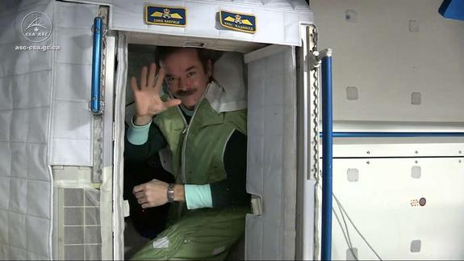

To quote the beginning of the full article:
This article explores different priorities of human comfort and how these priorities were satisfied in standalone artificial environments, such as space stations.
If you're impatient and just want to read the full article, click to read A history of design and human factors in Space Stations.
... or if you want a bit more background, read on ...
I began investigating in more detail the field of space architecture last year. Although I had a bit of experience from the ISSDC, I was much more interested in real current designs as opposed to hypothetical scenarios.
Space architecture, and its parent field of design is a broad one. It's an engineering challenge, an economic challenge, a logistical challenge, a political challenge, you name it. As an architect, the priorities of space station/settlement designs lie with the people that inhabit it. Simply put, you don't call an architect to build a rocket, but when a person is living inside that rocket, especially if they're stuck there for a while, that's when you call your architect.
This means that when an architect looks at designing a space station, although they need to be aware of the technical constraints of the environment (gravity, air, temperature, structure, radiation, transport, health), their true expertise lies in understanding how to make people comfortable and productive within that space. This means that space architects need to understand to an incredible amount of detail how we perceive and are affected by our environment. Much more so than Earth architects, who have the advantage of the natural world, which is usually much nicer than whatever is indoors, as well as existing social and urban infrastructure. Space architects don't have this benefit, and so the entire "world" is limited to what they can fit inside a large room.
This point: space architects are responsible for the happiness of humans, is an absolutely vital one, and unfortunately often missed. Too many architects are instead raptured by the technological pornography of the environment, the intricate constraints, or even the ideological ability to "reimagine our future". No. The reality is much more humble: space architecture is about rediscovering what humans hold dear in the world. You cannot claim to reinvent a better future if you do not yet understand what we already appreciate in the present.
And so if my point has made any impact, please go ahead and read A history of design and human factors in Space Stations, where I walk through the history of space station designs, their priorities, and what architects are looking at now.

Cosy, isn't it? Also, a TED Talk on How to go to space, without having to go to space shares many of my thoughts, and would be worth watching.